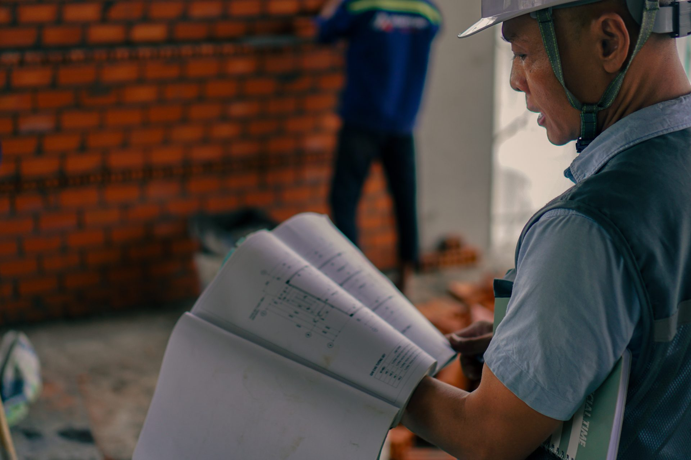
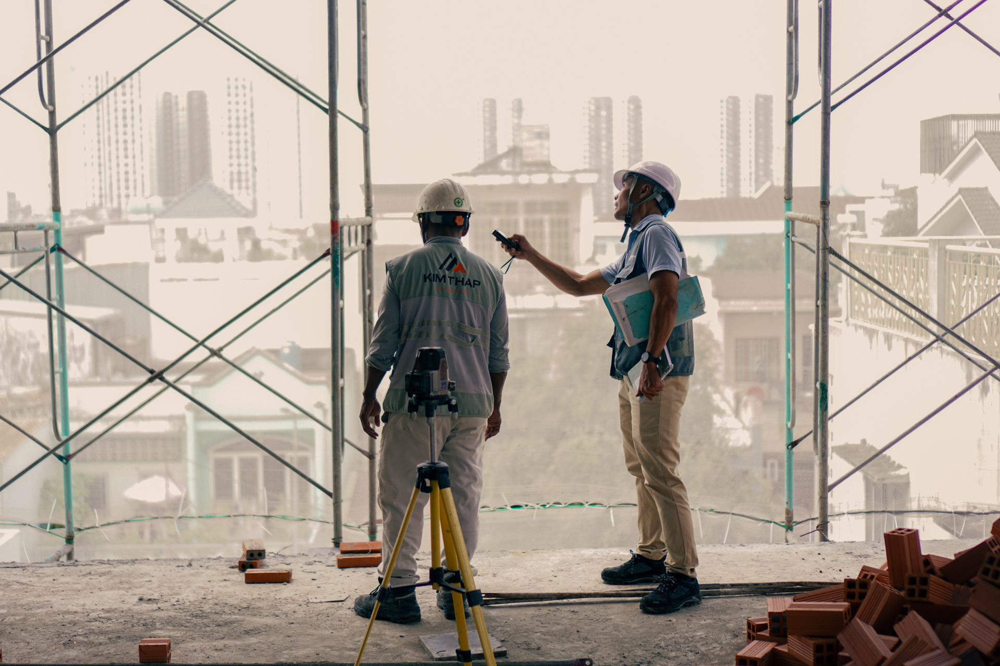
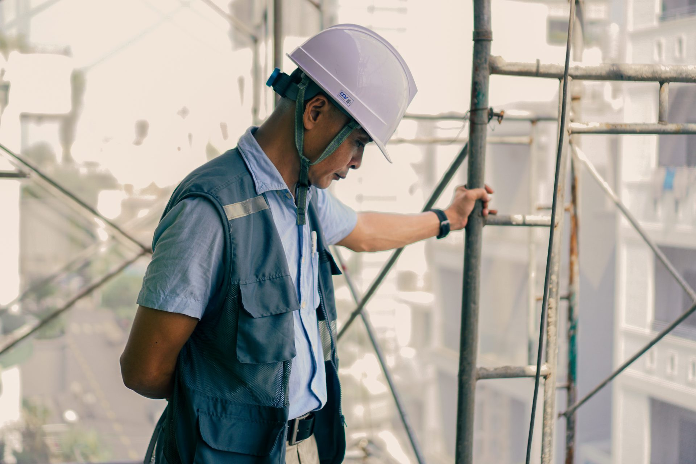
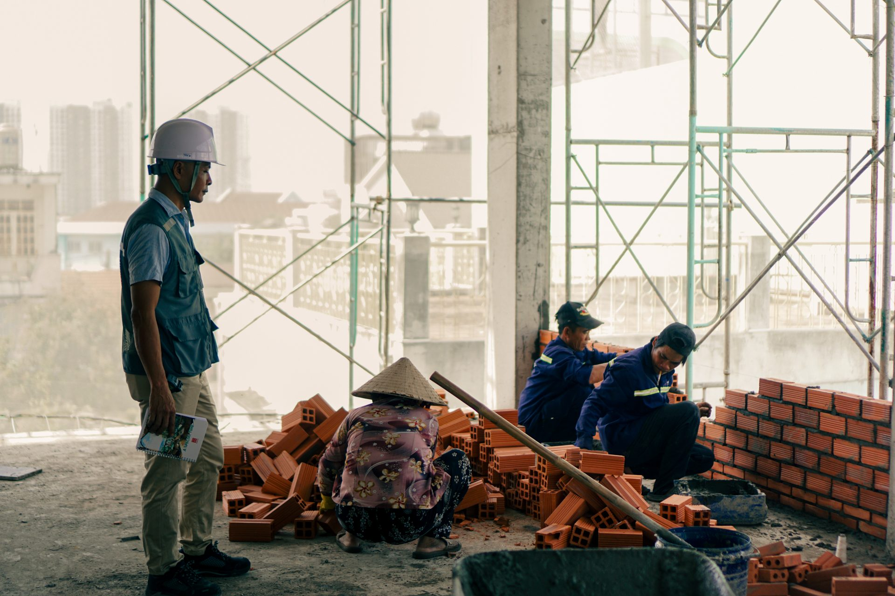

Một ngày theo chân người giám sát giữa nắng gió công trường
Đằng sau vẻ bề thế, vững chãi của một công trình hoàn thiện không chỉ là những khối bê tông, sắt thép khô khốc hay hàng trăm bản vẽ kỹ thuật phức tạp. Đó còn là hành trình thầm lặng của những con người phải có mặt từ rạng sáng đến tối mịt, theo sát từng centimet thi công và gánh trên vai trách nhiệm nặng nề về sự an toàn, tiến độ cũng như chất lượng của toàn bộ dự án.
📍 Công trường thi công•Nội dung: Người đứng sau công trường•Bài: Thái Thị Kỳ Duyên
▶
VIDEO PHÓNG SỰ (01:29)
Công việc phía sau những bức tường đang dần thành hình
Giữa không gian chói cang nắng gió, tiếng gầm hú liên tục của máy móc, tiếng sắt thép va đập và nhịp làm việc hối hả của hàng trăm công nhân, người giám sát công trình chọn cho mình một vị trí đặc biệt. Họ thường là những người quan sát nhiều nhất, di chuyển qua lại liên tục giữa các tầng lầu hay khoảng sân đầy bụi bặm, nhưng lại là người ít xuất hiện nhất trong các bức ảnh vinh danh khi công trình hoàn thành.
Một ngày làm việc điển hình của họ bắt đầu từ rất sớm, khi lớp sương mù buổi sáng còn chưa tan hết trên những giàn giáo. Khối lượng công việc khổng lồ mỗi ngày quay cuồng quanh việc theo dõi sát sao tiến độ thi công, kiểm tra từng mối hàn, lớp gạch, tiêu chuẩn mác bê tông cho đến việc đôn đốc công tác an toàn lao động của từng tổ đội.

Anh Tông kiểm tra lại bản vẽ.
Thoạt nhìn qua từ bên ngoài, nhiều người thường nghĩ công việc này đơn thuần chỉ là “đi tới đi lui quan sát và nhắc nhở”. Nhưng chỉ khi thực sự bước chân vào công trường, trải qua cái nóng hừng hực phả ra từ bê tông và áp lực gắt gao từ lịch giao nhà, mới hiểu mỗi quyết định của người giám sát đều cân não đến nhường nào. Mỗi chữ ký nghiệm thu, mỗi cái gật đầu cho qua hay yêu cầu đập đi làm lại đều gắn liền với uy tín, chi phí và sự an toàn tính mạng của bao người. Một chi tiết lệch lạc hay một sự cố nhỏ được phát hiện và khắc phục kịp thời hôm nay sẽ tránh cho công trình những hiểm họa khôn lường hàng chục năm về sau.
“Hằng ngày công việc của tôi chủ yếu là theo dõi sát tiến độ, trực tiếp kiểm tra chất lượng từng hạng mục và giám sát chặt chẽ các khâu đang thi công. Công việc này không cho phép mình lơ đễnh dù chỉ một phút, vì chỉ cần một sơ suất nhỏ cũng có thể ảnh hưởng đến công sức của cả một tập thể.”
— Anh Tông (Giám sát công trình)
🎙️ AUDIO INTERVIEW / PODCAST CLIP
AUDIO PODCAST / GIỌNG NÓI HIỆN TRƯỜNG (0:00 - 0:32)
“Một vài âm thanh được ghi lại trong quá trình tác nghiệp.”
Một ngày bắt đầu từ những điều rất nhỏ
Trước khi tiếng máy thi công vang lên, người giám sát đã phải có mặt tại công trường. Một vòng kiểm tra nhanh được bắt đầu từ những khu vực tưởng như không đáng chú ý: lối đi, hệ thống điện tạm, giàn giáo, vật liệu được tập kết và những vị trí đang chuẩn bị bước vào thi công.

Người giám sát cần liên tục di chuyển, quan sát và trao đổi tiến độ cùng công nhân.
Công việc của họ không chỉ diễn ra trong lúc công nhân đang làm việc. Có những khoảng thời gian phải đứng trước bản vẽ, đối chiếu từng thông số với thực tế hiện trường, trao đổi với kỹ thuật viên hoặc nhắc lại yêu cầu cho các tổ đội. Một thay đổi nhỏ trên bản vẽ cũng có thể kéo theo nhiều thay đổi trong quá trình thi công.
Giữa công trường luôn có hàng chục công việc diễn ra cùng lúc. Người giám sát vì thế phải liên tục di chuyển, quan sát và ghi nhớ. Khi một nhóm đang đổ bê tông, một nhóm khác có thể đang lắp đặt cốt thép, trong khi ở tầng trên, công nhân lại đang hoàn thiện tường. Mỗi khu vực đều có yêu cầu riêng và không cho phép sự chủ quan.

Khảo sát hiện trạng công trình.
Có những ngày công việc kết thúc khi trời đã tối. Nhưng trước khi rời công trường, họ vẫn phải kiểm tra lại những hạng mục quan trọng, ghi nhận vấn đề phát sinh và chuẩn bị cho công việc.
Khi trách nhiệm khắc sâu trong từng chi tiết nhỏ
Bước vào giai đoạn cao điểm của dự án, áp lực về tiến độ bàn giao luôn là thử thách khắc nghiệt nhất. Tuy nhiên, tiến độ không bao giờ được phép trở thành lý do để đánh đổi chất lượng. Người giám sát vừa phải là “cỗ máy điều hòa” kết nối hài hòa giữa đơn vị thiết kế, chủ đầu tư và lực lượng công nhân trực tiếp thi công, vừa phải là tấm lá chắn nghiêm khắc nhất giữ vững các tiêu chuẩn kỹ thuật.
Đôi mắt của người giám sát như được rèn luyện để nhận ra những bất thường nhỏ nhất: một mảng tường trát chưa đủ độ phẳng, khoảng cách thép đan bị lệch vài mm, hay một nhóm công nhân quên thắt dây an toàn khi làm việc trên cao. Đó là một công việc đòi hỏi sự tập trung cao độ, tính kỷ luật khắt khe cùng sự kiên nhẫn bền bỉ xuyên suốt từ ngày khởi công cho đến lúc nghiệm thu công trình.

Quan sát tổng thể khu vực thi công.
GÓC PHỎNG VẤN NGẮN
Hỏi
Theo anh, điều khó khăn và áp lực nhất khi đảm nhận vai trò người giám sát công trình là gì?
Trả lời
“Khó khăn nhất không phải là cái nắng, cái gió hay sự vất vả thể xác trên công trường, mà là làm sao dung hòa được bài toán cân nào: đảm bảo mọi thứ hoàn thành đúng tiến độ cam kết nhưng tuyệt đối không được làm suy giảm dù chỉ 1% chất lượng và tiêu chuẩn an toàn của công trình.”
Ảnh: Kỳ Duyên
BÀI: THÁI THỊ KỲ DUYÊN
Chia sẻ bài viết này
Giúp lan tỏa những câu chuyện thầm lặng đằng sau mỗi công trình:
BÌNH LUẬN (2)
NV
Nguyễn Văn An • 2 giờ trước
Bài viết đọc rất xúc động! Cảm ơn tác giả đã khắc họa chân thực công việc thầm lặng nhưng đầy trách nhiệm này.
TH
Trần Hoàng • 5 giờ trước
Giao diện báo e-Magazine thiết kế ảnh Hero full-screen ấn tượng quá!
BÌNH LUẬN (2)
Bài viết đọc rất xúc động! Cảm ơn tác giả đã khắc họa chân thực công việc thầm lặng nhưng đầy trách nhiệm này.
Giao diện báo e-Magazine thiết kế ảnh Hero full-screen ấn tượng quá!